LowTRI
Le fil conducteur de cette journée retrace les liens entre low-tech, recherche et ingénierie.
Tout d’abord, seront abordés la technique et son application, l’ingénierie, sans lesquelles le concept low-tech n’existerait pas. Et en retour, le paradigme proposé par le low-tech pour penser la technique sera abordé. Dans un second temps, les résultats des travaux du PRC « viabilité des low-tech » seront présentés en montrant ce que les travaux de chercheurs ont pu mettre en exergue sur le concept au sein de nos sociétés afin de mieux le caractériser. Ensuite, en complémentarité, le concept Low-tech sera abordé sous l’angle de sa mise en application pour repenser nos méthodes d’expérimentation et de collaboration. Dans un troisième temps, la réalisation concrète de low-tech sera présentée au travers d’exemples dans nos sociétés contemporaines : l’ingénierie low-tech et sa place dans la société.
Tout au long de la journée ces 3 liens seront représentés, expliqués, montrés, jusqu’à la table ronde qui offrira des échanges sur les apports des travaux au regards des enjeux de la transition que nous visons.
Le PRC, qu'est-ce que c'est ?
Le Projet de Recherche Collaboratif (PRC) « Viabilité Low‐tech » est un des projets financés par le réseau EcoSD, association loi 1901 dont le but principal est de « favoriser les échanges entre chercheurs et industriels, afin de créer et diffuser les connaissances dans le domaine de l’Eco‐conception de Systèmes pour un Développement durable en France, et au‐delà de faire reconnaitre l’expertise française en EcoSD à l’international. ». Le projet a débuté en septembre 2020 pour une durée de 12 mois, et implique plusieurs institutions académiques (Ecole des Mines de Saint‐Etienne, Université de Technologie de Troyes et Université‐Paris 2 Panthéon-Assas) et acteurs économiques (Evea et Orange).
L’objectif général du PRC « Viabilité Low‐tech » est de réaliser un état des lieux sur le concept de « low‐tech », et de proposer un premier cadre d’évaluation des démarches low-tech. L’état des lieux vise à apporter des éléments de définition et d’identifier les principes qui y sont rattachés, à la fois dans la littérature et dans les discours de ceux qui le pratiquent et l’utilisent. Enfin, les résultats de ce PRC serviront de point de départ à l’élaboration d’une grille de performance des low‐tech, regroupant les différents critères à prendre en compte dans la conception de techniques ou démarches dites low‐tech.
Les rapports intermédiaires du PRC :
Programme de l'événement
9h - 10h | Introduction : Low-tech et Technique
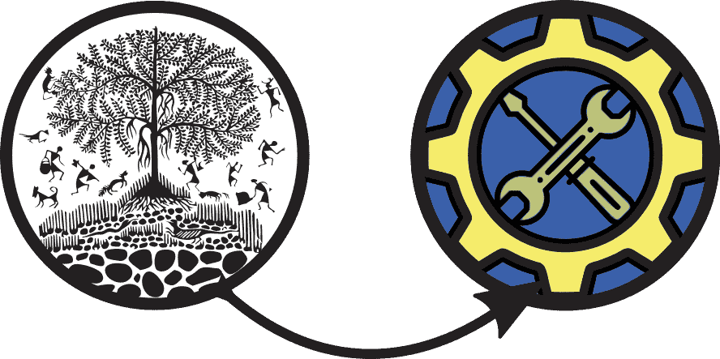 Ingénierie"/>Pour démarrer le webinaire, Victor Petit et Gauthier Roussilhe introduiront la technique et la low-tech au travers de leurs origines, de la relation à la technique, de la notion de milieu et de l’intérêt de ces notions pour penser le monde contemporain et spécialement pour les ingénieurs et étudiants.
Victor Petit
Philosophe des techniques à l'UTT
Gauthier Roussilhe
Designer numérique indépendant
10h - 12h30 | Présentation des travaux : Recherche et Low-tech
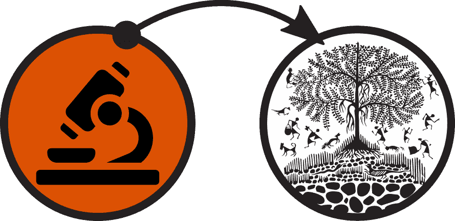 Ingénierie"/>Les membres du PRC low-tech présenteront les premiers résultats de leurs travaux de recherche. Pour débuter, une présentation de l’association EcoSD et du PRC low-tech sera faite par Stéphane Le Pochat. Puis Alexandre Gaultier présentera la méthodologie de recherche ainsi que l’articulation du projet. Ensuite Audrey Tanguy présentera son travail sur les principes clés du low-tech, Lisa Carrière fera une synthèse de son travail par des résultats des entretiens semi-directifs menés auprès d'acteurs low-tech sur leur façon d'appréhender le concept. Isabelle Dabadie présentera les premiers résultats sur la perception des low-tech par les consommateurs. Alexandre Gaultier et Clément Colin présenteront les résultats de l'analyse des textes sur le low-tech et enfin Romain Battini exposera le processus de conception des systèmes techniques low-tech et les premiers éléments de la grille d’évaluation.
Stéphane Le Pochat
Directeur scientifique à EVEA
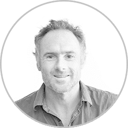
Lisa Carrière
Stagiaire à l'EMSE
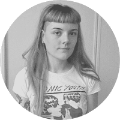
Audrey Tanguy
Chercheuse à l'EMSE
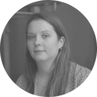
Alexandre Gaultier
Chercheur indépendant
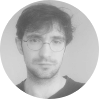
Clément Colin
Ergonome
Isabelle Dabadie
Chercheuse à l'Univ. Paris 2
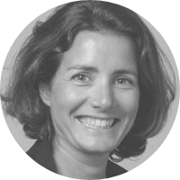
Romain Battini
Stagiaire à l'UTT
13h30 - 14h30 | Pratique collaborative et méthode d’expérimentation : Low-tech et Recherche
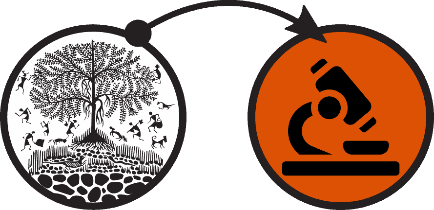 Ingénierie"/>En introduction de l’après-midi vous assisterez à une présentation de l’apport de la démarche des communs sur le projet. Les pratiques collaboratives mises en place par le collectif La Myne ainsi que certains groupes de travail vous seront présentés par Emmanuel Laurent et Alexandre Gaultier.
Emmanuel Laurent
Chercheur collectif la Myne
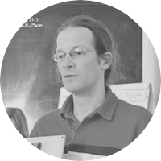
William Bernaud
Bénévole du PRC
Alexandre Gaultier
Chercheur indépendant
14h30 - 16h00 | Recherche-Action et modèles économiques : Ingénierie et Low-tech
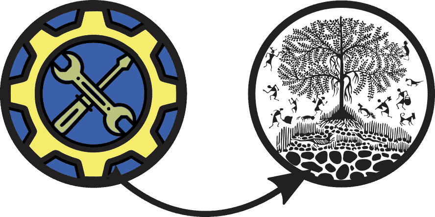 Ingénierie"/>Ensuite, il sera montré comment le concept low-tech est mis en application pour repenser nos méthodes d’expérimentation et de collaboration.
Au travers des retours d’expériences de Quentin Matteus du Low-tech Lab et de Jonathan Gueguen de l’association Apala sur la recherche action de modèles organisationnels et économiques “low-tech”, nous discuterons de l'apport des low-tech sur la recherche et l'ingénierie.
Quentin Matteus
Chercheur au Low-Tech Lab
Jonathan Gueguen
Ingénieur à APALA
16h00 - 17h00 | Table ronde sur les apports mutuels de la Low-tech, Recherche, Ingénierie
Ingénierie"/>Cette table ronde rassemblera les membres du PRC low-tech au travers d'Alexandre Gaultier, Quentin Mateus du Low-tech Lab, Michel Foata d’OseOns et Thibaut Faucon de l’ADEME autour de l’apport mutuel de la low-tech-recherche-ingénierie pour penser la technique.
Alexandre Gaultier
Chercheur indépendant
Quentin Mateus
Chercheur au Low-Tech Lab
Michel Foata
Fondateur d'OseOns
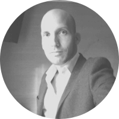
Thibaut Faucon
Responsable de projet à l'ADEME
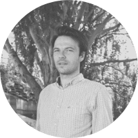
Partenaires
LowTRI
PRC Low-Tech
Les membres du PRC :
- Alexandre Gaultier
- Antoine Martin
- Audrey Tanguy
- Clément Colin
- Gwenaël Petitjean
- Gwenn Prévost
- Isabelle Dabadie
- Laure Lucas
- Lisa Carrière
- Marc Vautier
- Mihaela Juganaru-Mathieu
- Paul Bourgy
- Reynald Lherbier
- Romain Battini
- Stéphane Lepochat
- Tatiana Reyes
- Thomas Delard
- Valérie Laforest
- Victor Petit
- Willam Bernaud
Pourquoi une page web low-tech ?
Cette page web est une page "low-tech", c'est-à-dire qu'elle a été développée en minimisant son empreinte écologique 🌳
Elle est codée simplement en HTML et CSS.
Les images sont compressées, optimisées et utilisées à bon escient.
Son design est simple et indémodable.
Résultat :
- Une page web plus légère 🐦
- Une navigation plus simple et plus rapide 🌠
- Un impact environnemental réduit 🌱
Merci au FID de nous avoir aidé à créer cette page web 😃